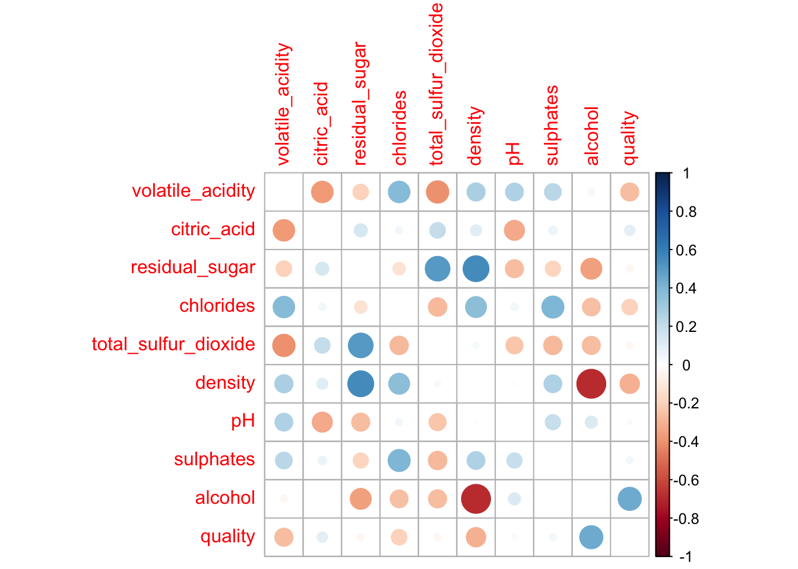
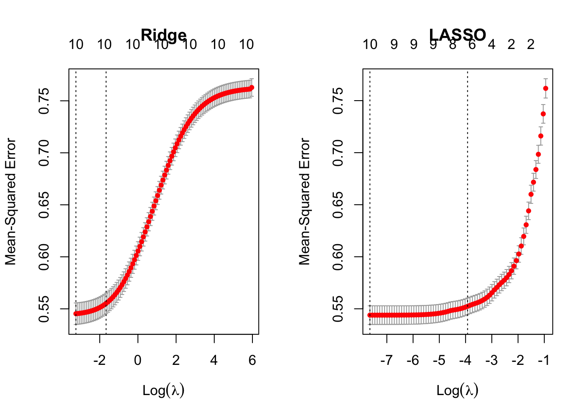

renv::activate()
packages <- c(
"dplyr",
"readr",
"tidyr",
"ggplot2",
"purrr",
"httpgd",
"cowplot",
"ISLR2",
"stringr",
"corrplot",
"car",
"glmnet",
"caret",
"broom"
)
lapply(packages, require, character.only=T)
Due: Thu, Mar 2, 2023 @ 11:59pm
Please read the instructions carefully before submitting your assignment.
- This assignment requires you to only upload a
PDFfile on Canvas - Don’t collapse any code cells before submitting.
- Remember to make sure all your code output is rendered properly before uploading your submission.
⚠️ Please add your name to the author information in the frontmatter before submitting your assignment ⚠️
For this assignment, we will be using the Wine Quality dataset from the UCI Machine Learning Repository. The dataset consists of red and white vinho verde wine samples, from the north of Portugal. The goal is to model wine quality based on physicochemical tests
We will be using the following libraries:
## You can use this function to
## generate a formula from a vector of variables
make_formula <- function(x){
as.formula(
paste("quality ~ ", paste(x, collapse = " + "))
)
}
make_formula(c("a", "b", "c"))quality ~ a + b + c
<environment: 0x7fa3025b24d0>## You can use this function to
# generate a model matrix for glmnet()
make_model_matrix <- function(formula){
X <- model.matrix(formula, df)[, -1]
cnames <- colnames(X)
for(i in 1:ncol(X)){
if(!cnames[i] == "typewhite"){
X[, i] <- scale(X[, i])
} else {
colnames(X)[i] <- "type"
}
}
return(X)
}Question 1
50 points
Regression with categorical covariate and \(t\)-Test
1.1 (5 points)
Read the wine quality datasets from the specified URLs and store them in data frames df1 and df2.
url1 <- "https://archive.ics.uci.edu/ml/machine-learning-databases/wine-quality/winequality-white.csv"
url2 <- "https://archive.ics.uci.edu/ml/machine-learning-databases/wine-quality/winequality-red.csv"
df1 <- read_delim(url1, delim=";")Rows: 4898 Columns: 12
── Column specification ────────────────────────────────────────────────────────
Delimiter: ";"
dbl (12): fixed acidity, volatile acidity, citric acid, residual sugar, chlo...
ℹ Use `spec()` to retrieve the full column specification for this data.
ℹ Specify the column types or set `show_col_types = FALSE` to quiet this message.df2 <- read_delim(url2, delim=";")Rows: 1599 Columns: 12
── Column specification ────────────────────────────────────────────────────────
Delimiter: ";"
dbl (12): fixed acidity, volatile acidity, citric acid, residual sugar, chlo...
ℹ Use `spec()` to retrieve the full column specification for this data.
ℹ Specify the column types or set `show_col_types = FALSE` to quiet this message.1.2 (5 points)
Perform the following tasks to prepare the data frame df for analysis:
- Combine the two data frames into a single data frame
df, adding a new column calledtypeto indicate whether each row corresponds to white or red wine. - Rename the columns of
dfto replace spaces with underscores - Remove the columns
fixed_acidityandfree_sulfur_dioxide - Convert the
typecolumn to a factor - Remove rows (if any) with missing values.
df <- bind_rows(
df1 %>% mutate(type="white"),
df2 %>% mutate(type="red")
) %>%
rename_all(~str_replace_all(., " ", "_")) %>%
select(-c(fixed_acidity, free_sulfur_dioxide)) %>%
mutate(type = as.factor(type)) %>%
drop_na()The output to R dim(df) is
dim(df)[1] 6497 111.3 (20 points)
Recall from STAT 200, the method to compute the \(t\) statistic for the the difference in means (with the equal variance assumption)
Using
dfcompute the mean ofqualityfor red and white wine separately, and then store the difference in means as a variable calleddiff_mean.Compute the pooled sample variance and store the value as a variable called
sp_squared.Using
sp_squaredanddiff_mean, compute the \(t\) Statistic, and store its value in a variable calledt1.
df_summary <- df %>%
group_by(type) %>%
summarize(
mean = mean(quality),
sd = sd(quality),
n=length(quality)
)
diff_mean <- df_summary$mean %>% diff()
sp <- sum(
df_summary$sd^2 * (df_summary$n-1)
) / sum(df_summary$n - 2)
t1 <- diff_mean / (sqrt(sp) * sqrt(1/(nrow(df1)) + 1/(nrow(df2))))
t1[1] 9.6841581.4 (10 points)
Equivalently, R has a function called t.test() which enables you to perform a two-sample \(t\)-Test without having to compute the pooled variance and difference in means.
Perform a two-sample t-test to compare the quality of white and red wines using the t.test() function with the setting var.equal=TRUE. Store the t-statistic in t2.
t_test <- t.test(
df %>% filter(type == "white") %>% select(quality),
df %>% filter(type == "red") %>% select(quality),
var.equal=T
)
t2 <- t_test$statistic1.5 (5 points)
Fit a linear regression model to predict quality from type using the lm() function, and extract the \(t\)-statistic for the type coefficient from the model summary. Store this \(t\)-statistic in t3.
cat_model <- lm(quality ~ type, df)
t3 <- coef(summary(cat_model))[, "t value"][2]1.6 (5 points)
Print a vector containing the values of t1, t2, and t3. What can you conclude from this? Why?
c(t1, t2, t3) # Insert your code here t typewhite
9.684158 9.685650 9.685650 The \(t\)-statistics from all three methods are equivalent. The method using \(t_1\) produces slightly smaller values.
Question 2
25 points
Collinearity
2.1 (5 points)
Fit a linear regression model with all predictors against the response variable quality. Use the broom::tidy() function to print a summary of the fitted model. What can we conclude from the model summary?
full_model <- lm(quality ~ ., df)
summary(full_model)
Call:
lm(formula = quality ~ ., data = df)
Residuals:
Min 1Q Median 3Q Max
-3.3415 -0.4725 -0.0405 0.4573 3.1140
Coefficients:
Estimate Std. Error t value Pr(>|t|)
(Intercept) 5.753e+01 9.331e+00 6.166 7.44e-10 ***
volatile_acidity -1.609e+00 8.057e-02 -19.965 < 2e-16 ***
citric_acid 2.721e-02 7.833e-02 0.347 0.72827
residual_sugar 4.509e-02 4.158e-03 10.844 < 2e-16 ***
chlorides -9.639e-01 3.328e-01 -2.897 0.00378 **
total_sulfur_dioxide -3.289e-04 2.623e-04 -1.254 0.20995
density -5.520e+01 9.320e+00 -5.922 3.34e-09 ***
pH 1.885e-01 6.613e-02 2.850 0.00438 **
sulphates 6.620e-01 7.584e-02 8.730 < 2e-16 ***
alcohol 2.767e-01 1.418e-02 19.514 < 2e-16 ***
typewhite -3.858e-01 5.493e-02 -7.023 2.39e-12 ***
---
Signif. codes: 0 '***' 0.001 '**' 0.01 '*' 0.05 '.' 0.1 ' ' 1
Residual standard error: 0.7371 on 6486 degrees of freedom
Multiple R-squared: 0.2887, Adjusted R-squared: 0.2876
F-statistic: 263.3 on 10 and 6486 DF, p-value: < 2.2e-16The model is a good fit (based on the \(F\)-statistic). However, the
citric_acidandtotal_sulfur_dioxidecovariates don’t seem to have significant effects on the wine quality. There is a possibility of multi-collinearity involving these variables.
2.2 (10 points)
Fit two simple linear regression models using lm(): one with only citric_acid as the predictor, and another with only total_sulfur_dioxide as the predictor. In both models, use quality as the response variable. How does your model summary compare to the summary from the previous question?
model_citric <- lm(quality ~ citric_acid, df)
summary(model_citric)
Call:
lm(formula = quality ~ citric_acid, data = df)
Residuals:
Min 1Q Median 3Q Max
-2.9938 -0.7831 0.1552 0.2426 3.1963
Coefficients:
Estimate Std. Error t value Pr(>|t|)
(Intercept) 5.65461 0.02602 217.343 <2e-16 ***
citric_acid 0.51398 0.07429 6.918 5e-12 ***
---
Signif. codes: 0 '***' 0.001 '**' 0.01 '*' 0.05 '.' 0.1 ' ' 1
Residual standard error: 0.8701 on 6495 degrees of freedom
Multiple R-squared: 0.007316, Adjusted R-squared: 0.007163
F-statistic: 47.87 on 1 and 6495 DF, p-value: 5.002e-12model_sulfur <- lm(quality ~ total_sulfur_dioxide, df)
summary(model_sulfur)
Call:
lm(formula = quality ~ total_sulfur_dioxide, data = df)
Residuals:
Min 1Q Median 3Q Max
-2.8866 -0.7971 0.1658 0.2227 3.1965
Coefficients:
Estimate Std. Error t value Pr(>|t|)
(Intercept) 5.8923848 0.0246717 238.831 < 2e-16 ***
total_sulfur_dioxide -0.0006394 0.0001915 -3.338 0.000848 ***
---
Signif. codes: 0 '***' 0.001 '**' 0.01 '*' 0.05 '.' 0.1 ' ' 1
Residual standard error: 0.8726 on 6495 degrees of freedom
Multiple R-squared: 0.001713, Adjusted R-squared: 0.001559
F-statistic: 11.14 on 1 and 6495 DF, p-value: 0.000848Both these variables didn’t seem to be significant predictors in
full_model. However, individually, they seem to be highly significant predictors of wine quality.
2.3 (5 points)
Visualize the correlation matrix of all numeric columns in df using corrplot()
df %>%
select(where(is.numeric)) %>%
cor() %>%
round(digits=2) %>%
corrplot(diag=F)
2.4 (5 points)
Compute the variance inflation factor (VIF) for each predictor in the full model using vif() function. What can we conclude from this?
library(car)
vif(full_model) %>% knitr::kable()| x | |
|---|---|
| volatile_acidity | 2.103853 |
| citric_acid | 1.549248 |
| residual_sugar | 4.680035 |
| chlorides | 1.625065 |
| total_sulfur_dioxide | 2.628534 |
| density | 9.339357 |
| pH | 1.352005 |
| sulphates | 1.522809 |
| alcohol | 3.419849 |
| type | 6.694679 |
The VIF for
residual_sugar,densityandtypeare notably large. This evidences the presence of multi-collinearity infull_model
Question 3
40 points
Variable selection
null_model <- lm(quality ~ 1, df)
full_model <- lm(quality ~ ., df)3.1 (5 points)
Run a backward stepwise regression using a full_model object as the starting model. Store the final formula in an object called backward_formula using the built-in formula() function in R
backward_model <- step(full_model, direction="backward")Start: AIC=-3953.43
quality ~ volatile_acidity + citric_acid + residual_sugar + chlorides +
total_sulfur_dioxide + density + pH + sulphates + alcohol +
type
Df Sum of Sq RSS AIC
- citric_acid 1 0.066 3523.6 -3955.3
- total_sulfur_dioxide 1 0.854 3524.4 -3953.9
<none> 3523.5 -3953.4
- pH 1 4.413 3527.9 -3947.3
- chlorides 1 4.559 3528.1 -3947.0
- density 1 19.054 3542.6 -3920.4
- type 1 26.794 3550.3 -3906.2
- sulphates 1 41.399 3564.9 -3879.5
- residual_sugar 1 63.881 3587.4 -3838.7
- alcohol 1 206.860 3730.4 -3584.8
- volatile_acidity 1 216.549 3740.0 -3567.9
Step: AIC=-3955.3
quality ~ volatile_acidity + residual_sugar + chlorides + total_sulfur_dioxide +
density + pH + sulphates + alcohol + type
Df Sum of Sq RSS AIC
- total_sulfur_dioxide 1 0.818 3524.4 -3955.8
<none> 3523.6 -3955.3
- chlorides 1 4.495 3528.1 -3949.0
- pH 1 4.536 3528.1 -3948.9
- density 1 20.794 3544.4 -3919.1
- type 1 26.943 3550.5 -3907.8
- sulphates 1 41.491 3565.1 -3881.2
- residual_sugar 1 67.371 3590.9 -3834.3
- alcohol 1 235.151 3758.7 -3537.6
- volatile_acidity 1 252.565 3776.1 -3507.5
Step: AIC=-3955.8
quality ~ volatile_acidity + residual_sugar + chlorides + density +
pH + sulphates + alcohol + type
Df Sum of Sq RSS AIC
<none> 3524.4 -3955.8
- pH 1 4.295 3528.7 -3949.9
- chlorides 1 4.523 3528.9 -3949.5
- density 1 21.540 3545.9 -3918.2
- sulphates 1 40.711 3565.1 -3883.2
- type 1 43.664 3568.0 -3877.8
- residual_sugar 1 66.572 3591.0 -3836.2
- alcohol 1 244.545 3768.9 -3521.9
- volatile_acidity 1 256.695 3781.1 -3501.0backward_formula <- formula(backward_model)
backward_formulaquality ~ volatile_acidity + residual_sugar + chlorides + density +
pH + sulphates + alcohol + type3.2 (5 points)
Run a forward stepwise regression using a null_model object as the starting model. Store the final formula in an object called forward_formula using the built-in formula() function in R
forward_model <- step(full_model, direction="forward")Start: AIC=-3953.43
quality ~ volatile_acidity + citric_acid + residual_sugar + chlorides +
total_sulfur_dioxide + density + pH + sulphates + alcohol +
typeforward_formula <- formula(forward_model)
forward_formulaquality ~ volatile_acidity + citric_acid + residual_sugar + chlorides +
total_sulfur_dioxide + density + pH + sulphates + alcohol +
type3.3 (10 points)
Create a
yvector that contains the response variable (quality) from thedfdataframe.Create a design matrix
Xfor thefull_modelobject using themake_model_matrix()function provided in the Appendix.Then, use the
cv.glmnet()function to perform LASSO and Ridge regression withXandy.
y <- df$qualityX <- make_model_matrix(full_model)lasso <- cv.glmnet(X, y, alpha=1)
ridge <- cv.glmnet(X, y, alpha=0)Create side-by-side plots of the ridge and LASSO regression results. Interpret your main findings.
par(mfrow=c(1, 2))
plot(ridge, main="Ridge")
plot(lasso, main="LASSO")
3.4 (5 points)
Print the coefficient values for LASSO regression at the lambda.1se value? What are the variables selected by LASSO?
Store the variable names with non-zero coefficients in lasso_vars, and create a formula object called lasso_formula using the make_formula() function provided in the Appendix.
lasso_coef <- coef(lasso, s="lambda.1se")
lasso_vars <- rownames(lasso_coef)[which(abs(lasso_coef) > 0)][-1]
lasso_formula <- make_formula(lasso_vars)
lasso_formulaquality ~ volatile_acidity + residual_sugar + chlorides + total_sulfur_dioxide +
pH + sulphates + alcohol + type
<environment: 0x7fa2e9ce2ed0>3.5 (5 points)
Print the coefficient values for ridge regression at the lambda.1se value? What are the variables selected here?
Store the variable names with non-zero coefficients in ridge_vars, and create a formula object called ridge_formula using the make_formula() function provided in the Appendix.
ridge_coef <- coef(ridge, s="lambda.1se")
ridge_vars <- rownames(ridge_coef)[which(abs(ridge_coef) > 0)][-1]
ridge_formula <- make_formula(ridge_vars)
ridge_formulaquality ~ volatile_acidity + citric_acid + residual_sugar + chlorides +
total_sulfur_dioxide + density + pH + sulphates + alcohol +
type
<environment: 0x7fa2eb365600>3.6 (10 points)
What is the difference between stepwise selection, LASSO and ridge based on you analyses above?
LASSO selects far fewer variables than ridge regression
Question 4
70 points
Variable selection
4.1 (5 points)
Excluding quality from df we have \(10\) possible predictors as the covariates. How many different models can we create using any subset of these \(10\) coavriates as possible predictors? Justify your answer.
Each variable is either included or excluded from a model, resulting in \(2\) possibilities. Therefore, the total number of possible models using the \(10\) variables is \[2^{10} = 1024.\] This number also includes the
null_model, i.e., the model with only an intercept and no covariates. If we exclude this, we will have \(2^{10}=1 = 1023\) different models
4.2 (20 points)
Store the names of the predictor variables (all columns except quality) in an object called x_vars.
x_vars <- colnames(df %>% select(-quality))Use:
- the
combn()function (built-in R function) and - the
make_formula()(provided in the Appendix)
to generate all possible linear regression formulas using the variables in x_vars. This is most optimally achieved using the map() function from the purrr package.
formulas <- map(
1:length(x_vars),
\(x){
vars <- combn(x_vars, x, simplify=F)
map(vars, make_formula)
}
) %>% unlist()Here are \(4\) randomly slected formulas
sample(formulas, 4) %>% as.character()[1] "quality ~ citric_acid + density + type"
[2] "quality ~ sulphates + alcohol"
[3] "quality ~ volatile_acidity + chlorides + pH + sulphates"
[4] "quality ~ volatile_acidity + chlorides" 4.3 (10 points)
Use map() and lm() to fit a linear regression model to each formula in formulas, using df as the data source. Use broom::glance() to extract the model summary statistics, and bind them together into a single tibble of summaries using the bind_rows() function from dplyr.
models <- map(formulas, \(x) lm(x, df))
summaries <- map(models, \(x) broom::glance(x)) %>% bind_rows()head(summaries) %>% knitr::kable()| r.squared | adj.r.squared | sigma | statistic | p.value | df | logLik | AIC | BIC | deviance | df.residual | nobs |
|---|---|---|---|---|---|---|---|---|---|---|---|
| 0.0705962 | 0.0704531 | 0.8419317 | 493.351120 | 0.000000 | 1 | -8099.993 | 16205.99 | 16226.32 | 4603.974 | 6495 | 6497 |
| 0.0073157 | 0.0071628 | 0.8701222 | 47.865475 | 0.000000 | 1 | -8313.970 | 16633.94 | 16654.28 | 4917.446 | 6495 | 6497 |
| 0.0013676 | 0.0012138 | 0.8727251 | 8.894441 | 0.002871 | 1 | -8333.377 | 16672.75 | 16693.09 | 4946.911 | 6495 | 6497 |
| 0.0402666 | 0.0401189 | 0.8555590 | 272.504696 | 0.000000 | 1 | -8204.310 | 16414.62 | 16434.96 | 4754.217 | 6495 | 6497 |
| 0.0017128 | 0.0015591 | 0.8725743 | 11.143435 | 0.000848 | 1 | -8332.254 | 16670.51 | 16690.84 | 4945.201 | 6495 | 6497 |
| 0.0935491 | 0.0934095 | 0.8314704 | 670.307800 | 0.000000 | 1 | -8018.760 | 16043.52 | 16063.86 | 4490.273 | 6495 | 6497 |
4.4 (5 points)
Extract the adj.r.squared values from summaries and use them to identify the formula with the highest adjusted R-squared value.
Rsq <- summaries$adj.r.squaredStore resulting formula as a variable called rsq_formula.
rsq_formula <- formulas[[which(Rsq == max(Rsq))]]
rsq_formulaquality ~ volatile_acidity + residual_sugar + chlorides + total_sulfur_dioxide +
density + pH + sulphates + alcohol + type
<environment: 0x7fa2ea71e248>4.5 (5 points)
Extract the AIC values from summaries and use them to identify the formula with the lowest AIC value.
aic <- summaries$AICStore resulting formula as a variable called aic_formula.
aic_formula <- formulas[[which(aic == min(aic))]]
aic_formulaquality ~ volatile_acidity + residual_sugar + chlorides + density +
pH + sulphates + alcohol + type
<environment: 0x7fa2ec9a31c8>4.6 (15 points)
Combine all formulas shortlisted into a single vector called final_formulas.
null_formula <- formula(null_model)
full_formula <- formula(full_model)
final_formulas <- c(
null_formula,
full_formula,
backward_formula,
forward_formula,
lasso_formula,
ridge_formula,
rsq_formula,
aic_formula
)Are
aic_formulaandrsq_formulathe same? How do they differ from the formulas shortlisted in question 3?Which of these is more reliable? Why?
If we had a dataset with \(10,000\) columns, which of these methods would you consider for your analyses? Why?
4.7 (10 points)
Use map() and glance() to extract the sigma, adj.r.squared, AIC, df, and p.value statistics for each model obtained from final_formulas. Bind them together into a single data frame summary_table. Summarize your main findings.
summary_table <- map(
final_formulas,
\(x) lm(x, df) %>%
broom::glance() %>%
select(c(sigma, adj.r.squared, AIC, df, p.value))
) %>% bind_rows()
names <- c(
"null_formula",
"full_formula",
"backward_formula",
"forward_formula",
"lasso_formula",
"ridge_formula",
"rsq_formula",
"aic_formula"
)
summary_table <- cbind(names, summary_table)
summary_table %>% knitr::kable()| names | sigma | adj.r.squared | AIC | df | p.value |
|---|---|---|---|---|---|
| null_formula | 0.8732553 | 0.0000000 | 16679.64 | NA | NA |
| full_formula | 0.7370527 | 0.2876152 | 14486.26 | 10 | 0 |
| backward_formula | 0.7370314 | 0.2876563 | 14483.89 | 8 | 0 |
| forward_formula | 0.7370527 | 0.2876152 | 14486.26 | 10 | 0 |
| lasso_formula | 0.7391172 | 0.2836187 | 14520.61 | 8 | 0 |
| ridge_formula | 0.7370527 | 0.2876152 | 14486.26 | 10 | 0 |
| rsq_formula | 0.7370027 | 0.2877118 | 14484.38 | 9 | 0 |
| aic_formula | 0.7370314 | 0.2876563 | 14483.89 | 8 | 0 |
The minimum AIC model gives us the model with the fewest variables (along with LASSO), but has better Adjusted R squared and better AIC (obviously). It is interesting to note that the Backward regression method gives us the same model with far smaller computational overhead.
c(aic_formula, backward_formula, lasso_formula)[[1]]
quality ~ volatile_acidity + residual_sugar + chlorides + density +
pH + sulphates + alcohol + type
<environment: 0x7fa2ec9a31c8>
[[2]]
quality ~ volatile_acidity + residual_sugar + chlorides + density +
pH + sulphates + alcohol + type
[[3]]
quality ~ volatile_acidity + residual_sugar + chlorides + total_sulfur_dioxide +
pH + sulphates + alcohol + type
<environment: 0x7fa2e9ce2ed0>On the other hand the maximum R squared model gives us a model with one additional variable, and better R squared. The Ridge formula is essentially the same as the full model, and we won’t see any meaningful differences.
Appendix
Session Information
Print your R session information using the following command
sessionInfo()R version 4.2.2 (2022-10-31)
Platform: x86_64-apple-darwin22.1.0 (64-bit)
Running under: macOS Ventura 13.2.1
Matrix products: default
BLAS: /usr/local/Cellar/openblas/0.3.21/lib/libopenblasp-r0.3.21.dylib
LAPACK: /usr/local/Cellar/r/4.2.2_1/lib/R/lib/libRlapack.dylib
locale:
[1] en_US.UTF-8/en_US.UTF-8/en_US.UTF-8/C/en_US.UTF-8/en_US.UTF-8
attached base packages:
[1] stats graphics grDevices datasets utils methods base
other attached packages:
[1] broom_1.0.4 glmnet_4.1-6 Matrix_1.5-1 car_3.1-1 carData_3.0-5
[6] corrplot_0.92 stringr_1.5.0 ISLR2_1.3-2 cowplot_1.1.1 httpgd_1.3.1
[11] purrr_1.0.1 ggplot2_3.4.0 tidyr_1.2.1 readr_2.1.3 dplyr_1.0.10
loaded via a namespace (and not attached):
[1] shape_1.4.6 tidyselect_1.2.0 xfun_0.36 splines_4.2.2
[5] lattice_0.20-45 colorspace_2.0-3 vctrs_0.5.1 generics_0.1.3
[9] htmltools_0.5.4 yaml_2.3.6 survival_3.4-0 utf8_1.2.2
[13] rlang_1.0.6 pillar_1.8.1 later_1.3.0 glue_1.6.2
[17] withr_2.5.0 DBI_1.1.3 foreach_1.5.2 lifecycle_1.0.3
[21] munsell_0.5.0 gtable_0.3.1 codetools_0.2-18 evaluate_0.20
[25] knitr_1.41 tzdb_0.3.0 fastmap_1.1.0 fansi_1.0.3
[29] highr_0.10 Rcpp_1.0.9 backports_1.4.1 renv_0.16.0
[33] scales_1.2.1 jsonlite_1.8.4 abind_1.4-5 systemfonts_1.0.4
[37] hms_1.1.2 digest_0.6.31 stringi_1.7.12 grid_4.2.2
[41] cli_3.6.0 tools_4.2.2 magrittr_2.0.3 tibble_3.1.8
[45] pkgconfig_2.0.3 ellipsis_0.3.2 assertthat_0.2.1 rmarkdown_2.20
[49] iterators_1.0.14 R6_2.5.1 compiler_4.2.2